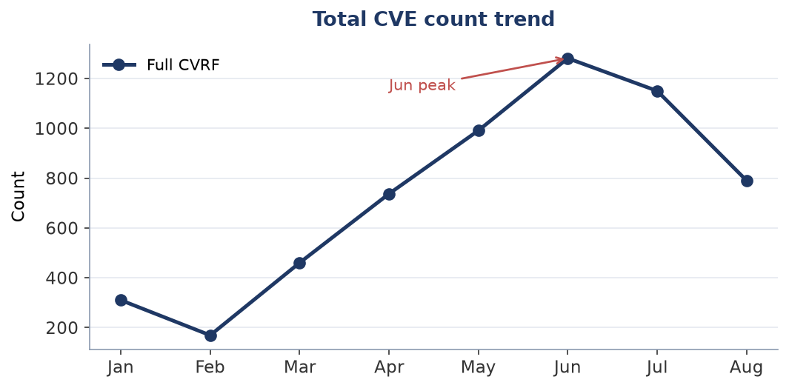
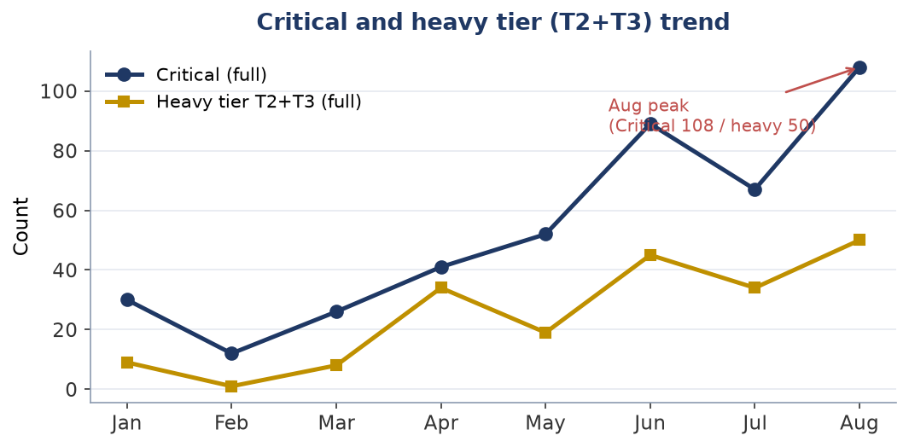
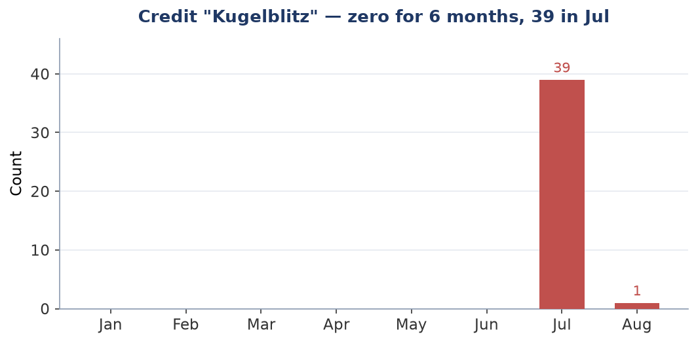
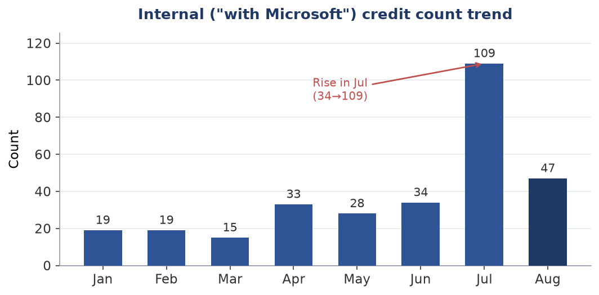

Technical report (machine-generated facts + human interpretation)
The surge in vulnerability discovery by frontier AI
A situational analysis as of August 2026, with implications for practitioners
Practitioners and decision-makers responsible for vulnerability and patch management
About this report's structure and dates This report is composed by injecting human interpretation into a factual record (figures, tables, charts) generated by an automated monitoring script. Fact data acquired: 2026-08-13 (frozen as a snapshot) Interpretation (analysis) updated: 2026-08-13 Note: facts are automatic, interpretation is updated separately by a human. If the two dates are far apart, the interpretation may not reflect the latest facts. |
On MSRC's after-the-fact revisions This report is based on values finalized on 2026-08-13. MSRC revises past months after the fact (e.g., June CVE 1281→1205), so post-revision data may appear to give different results. Revision records are retained separately. |
[Disclaimer / Sources] • This report is an informal analysis by a hypothetical author projecting a practitioner responsible for vulnerability response; it is not the view of any specific individual or organization. • Fact data sources: Microsoft MSRC CVRF, CISA KEV, and other public information. • The analysis is generated with AI (a large language model). Facts are verified where possible, but accuracy and completeness are not guaranteed. Confirm important judgments against primary sources. • Facts are auto-updated but interpretation is updated as needed; the two dates may be far apart (see header). • Freshness: the facts in this report are as of 2026-08-13. KEV and PoC status change moment to moment; consult primary sources for the latest. |
[Note on neutrality] This report's analysis is generated using Anthropic's AI (Claude). The report refers to that company's Project Glasswing and the like, but this is intended as neutral description based on public information and does not endorse or advocate for any specific company. Readers should consult primary sources and judge independently. |
Executive summary
Measured by CVE count, August 2026's Patch Tuesday is a third smaller than July's. Yet the tier that requires change control and a maintenance window reached its highest level in this report's observation window, and an exploited zero-day is present, as it was last month. The count moved in one direction; the work and the risk moved in another.
And this month, the product-category classification this report uses to decompose that count stopped working, because Microsoft changed a title format. Upstream conventions and tallying rules change without notice. Anything depending on them cannot see the change until it learns of it, or distrusts its own output enough to count again. The previous issue examined this through press tallies that disagreed with one another; this month it happened on our side. What stopped working, how far it reached, and what it did not reach, are stated before anything else.
Conclusion in one line The count fell and the weight rose. And this month, the side that failed to follow a change of convention was ours. |
Terms: "all CVRF" and "core Microsoft" All CVRF — every CVE in MSRC's monthly document, including Edge/Chromium, Azure Linux (formerly Mariner) package advisories, and Azure cloud re-listings. Press tallies disagree because they cut this population differently. Core Microsoft — that population with the above removed. From this month the split resolves product identifiers to product names; it does not read the CVE title. That it did read titles, until the previous issue, is recorded in that issue's correction note. |
Analysis: the count fell and the weight rose
This month's figures point in three independent ways to the same thing: the count is not the signal.
|
July 2026 |
August 2026 |
All CVE |
1,150 |
790 |
Heavy tier (T2+T3) |
34 |
50 |
Critical |
67 |
108 |
The total fell by a third; the heavy tier set a record. As a share it doubled, from 3.0% to 6.3%. The previous issue wrote that the heavy tier does not rise monotonically but swings hard, and that one should plan for 45 in any given month. The ceiling was raised the following month. That is not a prediction coming true; it is the width of the swing being demonstrated.
The count does not translate directly into work, however. The same fifty items concentrated in a few products, or spread across many, are not the same change-control effort. In general, the more products in scope, the more systems to coordinate and the more combinations to validate. This report did not measure the distribution across products this month. That the count is the highest can be stated; whether the month is heavier work than the last cannot be, from this figure alone.
What gets exploited is not Critical — two months running
All three of this month's zero-days are rated Important, and are elevation-of-privilege or tampering. One is confirmed exploited (a WinSock privilege escalation); the other two are publicly disclosed but not exploited.
None of this month's 108 Critical vulnerabilities is confirmed exploited. The same shape held last month. A triage that reads Critical and stops has now, for two months running, dropped the one item that is actually being exploited.
The exploited one was listed in CISA KEV on Patch Tuesday itself, with a two-week remediation deadline. Last month's zero-days also went from NVD publication to KEV listing in zero days. But, as the previous issue's correction note records, MSRC's exploited flag and KEV do not always agree. The accurate statement is that this month they did.
The core of it: conventions change without notice. This month ours did not follow.
Microsoft changed the title format of Edge advisories this month. Titles used to carry a product-name prefix; this month they carry only the CVE number and a description of the fault. This report is not aware of any notice of that change.
As a result, the product-category classification, which depends on the title string, missed 38 of the month's 39 Edge advisories. Last month it matched 931 of 932. Nothing on our side changed, and the match rate fell into the low single digits. No error is raised. The figures keep coming. The table looks the same.
This has the same root cause as the population-split defect corrected in the previous issue. The split was moved to a product-identifier basis and was therefore unaffected; only the category classification was left on titles. The previous issue recorded that the same failure would eventually reach Table 5. It took one month.
What can be said is narrow. Changing a notation or a tallying rule is ordinary upstream practice, and downstream is not always told. Anything that depends on it cannot see the change until it learns of it, or distrusts its output enough to count again.
Implications and recommended actions
These are recommendations drawn from this report's analysis, not settled regulatory requirements. Specific supervisory expectations should be confirmed against primary sources.
1. Change what you monitor (continued from the previous issue, reinforced)
Stop using CVE count as a threat indicator. This month it fell by a third while the tier requiring change control set a record. A smaller count is not a smaller load.
Track instead the month-on-month movement of the tier that requires reboots and staged deployment. But that tier's count does not, by itself, express the work either. How far the scope is spread across products has to be checked against your own estimate. This report does not measure that distribution.
2. Decouple triage from the severity label (continued, reinforced)
None of this month's 108 Critical items is confirmed exploited. The one that is confirmed exploited is rated Important. The same shape has now appeared twice.
The destination is unchanged from the previous issue: CISA KEV, EPSS, and asset reachability in combination.
But this month the same thing happened to EPSS. The one item that is confirmed exploited, and listed in KEV, carries an EPSS value in the bottom third of all CVEs. The previous issue's exploited zero-day sat in almost the same place. For two months running, a CVE the predictive model rated low has been the one actually exploited. EPSS estimates the probability that activity will be observed; it is not a pointer to what is already being exploited. That is exactly why it is paired with KEV.
3. Emergency patch SLA (continued, with a correction to the previous issue)
This month's exploited zero-day was listed in KEV on Patch Tuesday, with a deadline two weeks out. It is a same-day item.
Its preconditions are shaped in a way that invites the wrong priority call. Per the vendor's description, exploitation requires local authentication on the target. It is tempting to read that as grounds for deprioritising. But the privilege required is that of an ordinary user, no user interaction is needed, and success yields SYSTEM. For an attacker who has obtained an ordinary-user foothold by some means, this is the path to the highest privilege. Initial access and privilege escalation are separate stages; discounting the second because it "requires authentication" does not match how an intrusion is assembled.
The vendor also rates the attack complexity as high, and states the reason: exploitation requires winning a race condition. Both sides of that have to be read together.
A correction to the previous issue. It wrote that one should act on Microsoft's exploited flag "even when the item is not yet in CISA KEV". Both of that month's zero-days were in fact listed in KEV on the day of disclosure, so the premise was wrong. The corrected claim is this — the two sources do not always agree, and either may come first. Do not wait on one of them alone.
4. Edge/Chromium auto-update (the previous issue's premise has changed)
The previous issue raised this because AI-attributed findings were concentrated in Edge. This month's Edge advisories are less than a tenth of last month's. This report cannot say why.
The practical point does not depend on the count. Electron/CEF-embedded applications (Teams, Slack, VS Code and others) do not benefit from the browser's auto-update. Enumerating those dependencies in an SBOM is worth as much in a month when Edge is quiet.
5. On the "second wave" forecast (testing the previous issue's expectation)
The previous issue wrote that disclosures in OSS and third-party products, arising from a particular research programme, could begin in earnest from August.
This month's primary data contains no credit string mentioning Anthropic or Claude. Last month contained one joint credit.
This does not show the wave did not arrive. This report sees only MSRC's monthly document; disclosures in third-party products and OSS do not appear in that population. The forecast cannot be judged from this data. Which means the previous issue made it without holding the means to test it.
6. Business continuity for AI dependence (continued)
Where AI sits in a workflow, treat dependence on a top-tier model as a continuity concern, and make model redundancy and fallback the default.
Primary-data breakdown — August 2026 Patch Tuesday
The following is a tally of primary data acquired from MSRC CVRF v3.0 (frozen snapshot 2026-08-13). The population is shown both as 'full CVRF' and as 'core Microsoft products' (excluding Edge/Chromium, Mariner (Azure Linux), and Azure cloud).
Table 1. By severity (two populations shown)
Severity |
Full CVRF |
(%) |
Core MS products |
(%) |
Critical |
108 |
14% |
62 |
15% |
Important |
397 |
50% |
357 |
85% |
Moderate |
207 |
26% |
1 |
0% |
Low |
32 |
4% |
0 |
0% |
Unrated |
46 |
6% |
0 |
0% |
Total |
790 |
100% |
420 |
100% |
Table 1 (by severity) — key point
Critical rose from 67 to 108, but because the all-CVRF population fell from 1,150 to 790, the share more than doubled, from 5.8% to 13.7%. Of those 108, however, 46 are Azure Linux package advisories; core Microsoft Critical is 62. Last month's Unrated accounted for 37% of the whole; this month it is under 6%, which tracks the fall in Edge advisories.
Table 2. By reboot class (the operational-workload axis)
Class |
Description |
Full CVRF |
Core MS products |
T3 |
Staged rollout required (Boot/Crypto) |
10 |
2 |
T2 |
Requires change management / maintenance window |
40 |
40 |
T0/T1 |
Auto-update / steady pipeline |
740 |
378 |
Table 2 (by reboot class) — key point
T2 and T3 together — the heavy tier — total 50, the highest in this report's observation window (from January 2026). Because the base fell, the share doubled from 3.0% to 6.3%. This tier requires change control and a maintenance window, so a smaller month can still be a heavier one. This report does not, however, measure how those 50 are distributed across products. The actual effort depends on the number of products in scope and on the estate they land in, so the highest count cannot be read as the heaviest month.
Table 3. Finder major categories (full CVRF)
Category |
Count |
(%) |
Note |
Uncredited |
385 |
49% |
May include automation (not asserted) |
External researchers (named) |
275 |
35% |
Named external finders |
Anonymous |
49 |
6% |
Self-identified anonymous |
Internal (with Microsoft etc.) |
47 |
6% |
Includes Kugelblitz/MORSE/WARP/ACS |
Hash identifier |
34 |
4% |
MS-anonymized identifier (identity unknown) |
Table 3 (by discoverer bucket) — key point
385 CVEs carry no credit, 48.7% of all CVRF, roughly level with last month. At the aggregate level this indicator behaves as it did in the previous issue, which set it aside as unreliable. Within Critical, the picture differs (see Table 4).
Table 4. Finder breakdown of Critical vulnerabilities (aggregated, no names)
Discoverer |
Critical count |
Tendency |
Uncredited |
51 |
Possibly automation (not asserted) |
External researchers (named) |
41 |
Majority of Critical |
Internal (ACS/WARP/MORSE) |
7 |
Few (mainly Networking/Hyper-V) |
Anonymous |
7 |
— |
Hash identifier |
2 |
— |
Kugelblitz (Edge, ref.) |
0 |
Does not appear in Critical (surface only) |
Counts only (no personal names stored in the fact data). The top rows are per-bucket and sum to the Critical total. The Kugelblitz row is a cross-cutting reference (not additive). Individual researcher names and CVE examples are given as prose in the interpretation.
Table 4 (discoverers of Critical) — key point
Of the 108 Critical items, 51 (47%) carry no credit. Last month it was 9 of 67 (13%). This is not acquisition lag. The month was re-fetched twenty-four hours apart before freezing, and the uncredited count did not move by one. It should be read as the month's actual state. What the jump means, however, cannot be determined from this figure. Internal discovery not appearing in acknowledgements, and a change in reporting practice, cannot be distinguished. Following the discipline established in the previous issue's correction note, no inference is drawn about who found something from the absence of a credit.
Table 5. By product category (full CVRF)
Category |
Count |
(%) |
Other |
334 |
42% |
Office/Word/Excel/PPT |
90 |
11% |
Win Services/Components |
73 |
9% |
Networking |
65 |
8% |
Kernel/Driver |
51 |
6% |
Graphics/Media |
44 |
6% |
SharePoint |
27 |
3% |
.NET/Dev |
24 |
3% |
Microsoft (other) |
24 |
3% |
Azure/Cloud |
17 |
2% |
RDP/Remote |
16 |
2% |
Auth/Identity |
10 |
1% |
Exchange |
7 |
1% |
SQL/Dynamics |
3 |
0% |
Hyper-V/Virtual |
2 |
0% |
Boot/Crypto (T3) |
2 |
0% |
Edge/Chromium |
1 |
0% |
Note: the category classification in this table is partially non-functional this month. Classification depends on the CVE title string, and Microsoft changed the title format of Edge advisories in August 2026 (`Chromium: CVE-…` → `CVE-…`). As a result, 38 of the month's 39 Edge advisories cannot be identified by title and are scattered across other categories and "Other". Likewise, Azure Linux package advisories carry upstream OSS titles, and 35 of them this month fall into Microsoft product categories. Table 5 therefore cannot be used this month, either as a breakdown across categories or as a comparison with the previous month.
The population split (420 core / 370 excluded) is unaffected by this defect. The split resolves CVRF product identifiers to product names rather than reading titles, so a change of title format does not move it. Tables 1–4 and the trend table rest on that split. The 334 "Other" rows this month are 296 Azure Linux, 29 Edge, and 9 Microsoft core.
Moving the classifier to a product-identifier basis is deferred to a later issue. It is not done this month because combining a classifier change with a monthly freeze would make it impossible to attribute a movement in the figures to one or the other.
Table 5 (by product category) — key point
The category classification in this table is partially non-functional this month. Classification depends on the CVE title string, and because Microsoft changed the Edge advisory title format this month, most Edge advisories cannot be identified by title and are scattered into other categories. Azure Linux package advisories carry upstream OSS titles, so some of them fall into Microsoft product categories. The note directly under the table gives the detail. This table cannot be used this month, either as a breakdown across categories or as a comparison with last month. The population split (core and excluded) is product-identifier based and is unaffected; Tables 1 through 4 and the trend table rest on it.
Appendix: an inventory of credits suggesting "AI"
The previous issue recorded that a credit name, Kugelblitz, appeared discontinuously — zero in January, zero in April, 39 in July — initially asserted it to be the trace of a Microsoft in-house AI tool, and then withdrew that assertion when primary sources did not support it. This month Kugelblitz appears once.
That fall cannot be interpreted. All 39 of last month's were attached to Edge advisories, and Edge advisories themselves are down to under a tenth this month. Whether Kugelblitz fell because the actor's activity contracted, or because there were almost no Edge vulnerabilities to attribute, cannot be separated from this figure. The inability to separate them is what is recorded.
This month's primary data contains other credit strings suggesting AI. One, in Japanese, reads "AIフィジカルインターフェイス二号機" and appears 13 times; another, in English, reads "AI's physical interface 001" and appears once. The numbers differ, so these do not look like one actor written in two languages, but like numbered names for separate units. They are the same class of object as Kugelblitz, and no assertion is made about what they are. What can be said is that the credit strings read this way.
Other credits contain the letters "ai" incidentally, within organisation and laboratory names; as in the previous issue, they cannot serve as an indicator of AI-derived findings.
This month's primary data contains no credit string mentioning Anthropic or Claude. Last month contained one joint credit.
Comparison with historical data — the January–August 2026 trend
This month is the first for which the conditions for month-on-month comparison hold. They hold only between last month and this one.
As the previous issue's correction note stated, the monthly "core Microsoft" series was in effect a series of how far the Azure Linux backfill had progressed at the moment each month happened to be fetched. Two causes: a defective metric definition, and months frozen at differing distances from their own Patch Tuesday. This month the classifier is on a product-identifier basis, and the freeze is at the same one-day distance as last month. So last month and this month are comparable; June and earlier are not. That is why the "core Microsoft" column has been dropped from the trend table. Every axis plotted below is independent of the classifier.
Trend table (only real numbers robust to acquisition lag)
Month |
CVE full |
Critical |
Heavy(T2+T3) |
Kugelblitz |
Internal(MS) |
Jan |
310 |
30 |
9 |
0 |
19 |
Feb |
169 |
12 |
1 |
0 |
19 |
Mar |
460 |
26 |
8 |
0 |
15 |
Apr |
737 |
41 |
34 |
0 |
33 |
May |
991 |
52 |
19 |
0 |
28 |
Jun |
1281 |
89 |
45 |
0 |
34 |
Jul |
1150 |
67 |
34 |
39 |
109 |
Aug |
790 |
108 |
50 |
1 |
47 |
Note: the 'CVE core' (core Microsoft products) column is not shown. The population classifier changed to v2 (affected-product based) from 2026-Aug, and placing v2 values in the same column as months frozen under v1 (title based) would render a change of classifier as a trend — an apparent collapse in core products. The current month's core breakdown is in the tables above, where only one classifier version is involved.

Fig 1: Total CVE count trend (full CVRF)
Chart 1 (total CVE count) — reading
Down a third from last month. As the previous issue showed, this curve corresponds neither to defensive load nor to risk, because what the population contains varies month to month — and that variation continues after this report freezes its figures.

Fig 2: Critical count and heavy tier (T2+T3) trend
Chart 2 (Critical and the heavy tier) — reading
Both rose. A month in which the total falls while both of these rise is the first in this report's observation window. The heavy tier set a record. The ceiling the previous issue named — plan for 45 — was raised the month after. As noted above, however, the highest count is not by itself the heaviest work.

Fig 3: Monthly appearance of the credit "Kugelblitz"
Chart 3 (Kugelblitz) — reading
After the July spike, back to one. As the appendix notes, that fall cannot be separated from the fall in Edge advisories themselves. The shape of the curve does not tell us about the actor's activity.

Fig 4: Internal ("with Microsoft") credit count trend
Chart 4 (internal discovery) — reading
Microsoft internal-discovery credits are also well down from last month. This may track the fall in Edge advisories, as Kugelblitz may; this report has no basis for connecting them.
What the trend shows (summary) A smaller count is neither a smaller load nor a lower risk. This month the count fell and the heavy tier set a record. Nor can the work be derived from the count directly. Total CVE, Critical, the heavy tier, Kugelblitz and internal discovery are independent of the classifier and can be plotted across eight months. "Core Microsoft" has only two comparable points. Not presenting incomparable things as comparable is the consequence of the previous issue's correction. The constraint is not a fault. |
KEV / EPSS — prioritizing immediate response
The following cross-references the target CVEs (T2/T3 ∨ Critical ∨ external-researcher credit) against CISA KEV and FIRST EPSS. KEV = a discrete fact of confirmed exploitation (the notification trigger). EPSS = an estimate of exploitation probability (a point-in-time value, changes daily, for reference). No discoverer or causation is asserted from these numbers.
Immediate-response targets — listed in CISA KEV (as of 2026-08-13)
CVE |
Product |
Severity |
Reboot class |
CVE-2026-68820 |
Windows Ancillary Function Driver for WinSock |
Important |
T0/T1 |
Top EPSS — estimated exploitation probability (as of 2026-08-12)
CVE |
Product category |
EPSS |
Percentile |
CVE-2026-61358 |
Win Services/Components |
0.0331 |
87.4% |
CVE-2026-66804 |
Win Services/Components |
0.0303 |
86.3% |
CVE-2026-62696 |
Win Services/Components |
0.0285 |
85.5% |
CVE-2026-65775 |
Kernel/Driver |
0.0231 |
81.9% |
CVE-2026-62893 |
Win Services/Components |
0.0185 |
77.2% |
CVE-2026-61930 |
Kernel/Driver |
0.0175 |
75.9% |
CVE-2026-62741 |
Networking |
0.0175 |
75.9% |
CVE-2026-62713 |
Kernel/Driver |
0.0175 |
75.8% |
CVE-2026-65665 |
SharePoint |
0.0173 |
75.6% |
CVE-2026-59124 |
Microsoft (other) |
0.0172 |
75.4% |
CVE-2026-62783 |
RDP/Remote |
0.0164 |
74.2% |
CVE-2026-62888 |
Graphics/Media |
0.0164 |
74.3% |
CVE-2026-64901 |
SharePoint |
0.0158 |
73.3% |
CVE-2026-66808 |
SharePoint |
0.0158 |
73.2% |
CVE-2026-66805 |
SharePoint |
0.0158 |
73.2% |
Note: EPSS is updated daily and its values change. The table above is a point-in-time snapshot (as of 2026-08-12) and is not used as a standalone trend metric. Only KEV is used as a notification trigger (EPSS is not).
Note: product names (KEV table) and product categories (EPSS table) are sourced from the CVRF (2026-08-13 frozen snapshot) — a separate source and point in time from KEV listing status and EPSS values. Categories use the same classification as Table 5. No discoverer or causation is asserted from these product names/categories.
Appendix: method, sources, accountability record
This appendix records the process behind the conclusions, including hypotheses discarded or corrected along the way, for reproducibility and accountability.
1. Purpose and questions
The question carries over from the previous issue: what can be said about defensive load and actual risk from monthly vulnerability data. This issue additionally checks what the metric definition, once corrected, shows.
2. Sources
This issue rests on primary data only and cites no press or secondary analysis. The previous issue surveyed secondary sources because the disagreement between press tallies was itself part of the argument; this issue had no such need.
MSRC CVRF API v3.0 — monthly security updates as per-CVE structured data, including acknowledgements, severity, exploitation status, affected products, CVSS vectors and FAQs.
CISA KEV catalog — the catalog of vulnerabilities known to be exploited, matched against this month's CVEs.
FIRST EPSS — the estimated probability that exploitation activity will be observed within 30 days, retrieved for this month's CVEs.
The KEV match was performed twice, by independent routes and on different days, with the same result.
3. How the data was acquired
Primary data was fetched in the acquisition environment and frozen. AI contributed to the design of the analysis logic and to the interpretation; the figures themselves are the output of runs in that environment.
The timing of acquisition produced an important finding this month. See section 5.
4. Method, in sequence
Primary data was fetched on Patch Tuesday. As recorded below, what was retrieved at that point was not the month's Patch Tuesday content.
It was re-fetched on the following two days, and frozen once the principal figures had been shown not to move across a twenty-four hour interval.
The product-identifier population split was applied to the frozen figures — a different classifier from the title-based split used through the previous issue.
KEV and EPSS were retrieved for this month's CVEs.
The output of the product-category classification was inspected, the collapse of Edge classification was found, and the cause was traced to the upstream change of title format.
For the exploited zero-day, the CVSS vector, Threats entries and FAQs were read in the original CVRF, and the preconditions were reflected in the body of this issue.
5. Indicators discarded or corrected in the course of the work
For accountability, judgements adopted and then discarded or corrected are recorded.
Finding 1: what was retrieved on Patch Tuesday itself was not this month's Patch Tuesday document. It held 1,517 CVEs, 98.6% of them in the excluded population (mostly Azure Linux package advisories). Re-fetched the next day, it held 790 — it fell by 727. That the count fell rather than rose is decisive: this was not an incomplete document but a different one. The first reading was nearly taken as delayed credit assignment; the population itself was different. Freezing that day's figures would have based this entire issue on another document.
Correction 2: the jump in Critical's uncredited share was nearly read as acquisition lag. It was initially taken for lag, but a re-fetch twenty-four hours later moved it by zero. The reading does not hold. It is recorded as the month's actual state, and no claim is made about its meaning. This restates the previous issue's lesson: acknowledgements mix external discovery, internal discovery and declined credit, and cannot separate discovery agency at the aggregate level.
Correction 3: the collapse of the category match rate was first misread as Edge disappearing. Edge advisories appeared to fall from 473 to one, and this was initially taken as a real decline. Counted on a product-identifier basis, the figure is 39; the difference was the classifier failing to follow the change. The obvious consequence — that in a month when a classifier has not followed, nothing can be argued from what it outputs — was confirmed only after being misread once.
Continuation 4: do not attach circumstantial evidence to a named entity (the previous issue's discarded assertion). The previous issue asserted that Kugelblitz was a particular AI tool and withdrew it against primary sources. That discipline holds here. Nothing is asserted about "AIフィジカルインターフェイス二号機" or "AI's physical interface 001".
Record 5: within one document, the exploitation status is not stated consistently. For the exploited zero-day, the CVRF Threats entry records the item as exploited, with exploitation detected, while the CVSS Temporal vector in the same document rates the exploit code maturity as unproven. This report's exploited flag is derived from the former; the CVSS field is not read. No judgement is offered as to which is right. The fact recorded is that two fields describing exploitation, in one vendor's one document, disagree. Anything reading exploitation status mechanically will get a different answer depending on which field it reads.
6. What the conclusions rest on, and the limits
Relied upon (high confidence)
The frozen figures (all CVE, core, severity, reboot class, discoverer buckets) are machine aggregations of primary data, confirmed not to move across a twenty-four hour interval.
The population split is product-identifier based and unaffected by this month's title change. Every product identifier resolved; none was left unresolved.
The KEV listing of the exploited zero-day was obtained by two independent routes with the same result.
The preconditions of that zero-day (local authentication required, ordinary-user privilege sufficient, no user interaction, SYSTEM on success, a race condition to be won) come from the CVSS vector and the FAQs in the CVRF.
Limits (undetermined; treat with care)
The product-category classification is non-functional this month. No claim in this issue rests on Table 5 or its breakdown.
The heavy tier is counted, but its distribution across products is not measured. The highest count cannot be taken as the heaviest work.
The cause of the jump in Critical's uncredited share is unknown. It has been shown not to be lag; nothing beyond that.
What Kugelblitz and "AIフィジカルインターフェイス二号機" are is unknown. As in the previous issue, no assertion is made.
Month-on-month comparison of "core Microsoft" holds for two points only. June and earlier differ in both classifier and freeze distance.
The previous issue's "second wave" expectation cannot be judged from the population this report observes.
No actual intrusion or observed technique involving the exploited zero-day has been examined by this report. The preconditions are the vendor's assessment, not a field observation.
7. Reproducing this
The figures can be reproduced with the collection and freezing tools in the public msrc_monitor repository (Python 3.12; dependencies per requirements.txt; network reachability to the MSRC API). MSRC revises past months after the fact, so identical figures are not guaranteed.
(1) Fetch the month: python collect.py
(2) Inspect and freeze — freezing is performed by a human, and an already-frozen month is refused: python freeze_month.py 2026-Aug --dry-run, then python freeze_month.py 2026-Aug
(3) Match KEV and EPSS: python enrich.py 2026-Aug
(4) Acknowledgement tallies (per CVE, deduplicated): see credit_counts and finder_bucket in state/2026-Aug.json
The interpretation prose is held per month under interpretation/<year-month>/; a build cannot mix one month's figures with another month's prose.
Confidence tiers for this issue's claims High — the count fell while the heavy tier set a record; the exploited zero-day is rated Important and none of the 108 Critical items is confirmed exploited; that one was listed in KEV on the day of disclosure; it reaches SYSTEM from ordinary-user privilege with no user interaction, but requires winning a race condition (all per the vendor); the population split resolved every product identifier Medium — the observation that, for two months running, a CVE the predictive model rated low was the one actually exploited (two months of observation) Undetermined — the cause of the jump in Critical's uncredited share; what Kugelblitz and "AIフィジカルインターフェイス二号機" are; why Edge advisories fell; how the heavy tier is distributed across products Treat with care — Table 5 is non-functional this month. Do not use it for a breakdown across categories or for comparison with the previous month. The population split is unaffected. / Within one CVRF document, two fields describing exploitation status disagree (section 5, Record 5) |
This report was produced through dialogue with an AI assistant (Claude). Primary data was acquired and executed in the acquisition environment, and the figures are based on those runs. The interpretation and analysis include AI contribution; independent verification against primary sources is recommended before relying on it for important decisions.